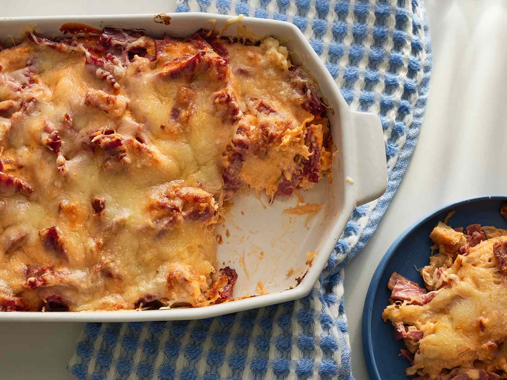

Reuben Casserole

A Delicious Casserole
Layered with sauerkraut, corned beef, swiss cheese, and bread
crumbs, perfect for Friday night
Ingredients
- 6 slices of rye bread, cubed
- 16 oz can of sauerkraut
- 1 lb corned beef
- 3/4 cup Russian-style salad dressing
- cooking spray
- 2 cups shredded swiss cheese
Steps
- Preheat the oven to 400 degrees F (200 degrees C). Spray
a 9x13-inch baking dish with cooking spray. Spray one
sheet of aluminum foil with cooking spray.
- Spread bread cubes in the bottom of the prepared baking
dish. Layer bread cubes with sauerkraut and beef strips,
then pour dressing over top. Cover with the aluminum foil,
sprayed-side down.
- Bake in the preheated oven for 20 minutes. Remove and
discard foil; sprinkle Swiss cheese over casserole.
Continue baking until cheese is melted and bubbly, about 10
more minutes.